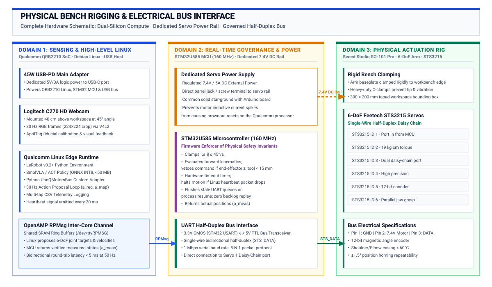

Postdoc Pre-Flight Implementation & Qualification Guide
Audience: Postdoctoral Researcher (Andrea, ETH Zurich) & Lab Staff Status: Canonical Engineering Implementation Checklist & Qualification Plan Target Platform: Arduino UNO Q (“Unikue” QRB2210 Linux + STM32U585 MCU) · Seeed Studio SO-101 6-DoF Arm · Hugging Face LeRobot · SmolVLA & ACT Models Reference Curriculum: Master Landing Page · Course Syllabus · Staff Master Plan (Sep–Dec 2026) · 12-Competency Matrix · Capstone Studio
1. Executive Mandate: Prove the Bench Before Teaching It
Andrea, your primary mission before the semester begins is to build, verify, and qualify one “Golden Reference Station” from raw hardware to untethered physical AI execution. You must act as “Student Zero” across all 8 labs, verifying that every exercise functions deterministically, producing the gold-standard artifacts, and isolating hardware failure modes before students arrive.
Students should finish this course with an autonomous embodied system that senses physical reality via vision, uses a learned model to propose multi-joint action chunks, delegates safety authority to an on-board microcontroller to permit or clamp motion, measures true kinematic outcomes, and revises its next decision from closed-loop feedback.
Do not attempt to write sixteen different handouts or build custom motor shields. The hardware kit is fixed: 1. The Board: Arduino UNO Q (Qualcomm QRB2210 Linux MPU + STM32U585 real-time MCU). 2. The Body: Seeed Studio SO-101 6-DoF arm (STS3215 smart serial bus servos) + $20 standard UVC USB webcam. 3. The Software/Model Spine: Hugging Face LeRobot (Python API) + SmolVLA / ACT action-chunking policies.
2. Phase 0: Physical Bench Assembly & Hardware Bring-Up
Complete these physical build steps and verify electrical safety before powering on digital electronics:
-
- Assemble the 6-DoF follower arm using the Seeed Studio SO-101 Pro kit.
- Verify mechanical backlash and free range of motion on all 6 joints (\(J_1\) base yaw to \(J_6\) gripper).
- Securely clamp the arm baseplate to the lab workbench using heavy-duty C-clamps. The arm must not tip or rock under maximum payload and full acceleration.
-
- Mount the standard UVC USB webcam (Logitech C270 or equivalent) on a rigid, vibration-isolated gooseneck arm overlooking the manipulation stage at an oblique angle (\(45^\circ\), \(40\text{ cm}\) distance).
- Define a marked physical workspace boundary (\(300\text{ mm} \times 200\text{ mm}\)) on the bench surface using high-contrast tape.
- Set up diffused, flicker-free LED task lighting to prevent exposure fluctuations.
-
- Connect a regulated external DC bench power supply (\(7.4\text{V}\), \(5\text{A}\) rating) dedicated exclusively to the STS3215 servo rail.
- Verify that the motor power supply delivers stable \(7.4\text{V}\) without voltage sag under multi-joint motion.
- CRITICAL: Tie the DC motor power ground and Arduino UNO Q ground together into a solid star-ground. NEVER draw motor current through the UNO Q headers.
-
- Power the Arduino UNO Q via its USB-C port using an official 45W USB-PD adapter through the powered USB-C hub.
- Plug the UVC webcam into a USB-A port on the hub; verify Linux recognizes the device at
/dev/video0. - Connect the single-wire half-duplex UART communication line from the STS3215 servo bus to the STM32U585 USART pins via the level-shifter circuit.


3. Phase 1: Hardware Bring-Up & Validation Steps
Before publishing student labs or ordering additional stations, you must successfully complete and log these four sequential validation steps:
[ Step 1: Native LeRobot Teleop ]
│ (Arm moves via standard HF LeRobot scripts)
▼
[ Step 2: 1-Joint MCU Interceptor ]
│ (STM32 intercepts UART, rejects invalid commands)
▼
[ Step 3: 6-DoF Governed Arm ]
│ (UnoQMotorsBus adapter runs full arm under MCU bounds)
▼
[ Step 4: Standalone Untethered Reach ]
(Qualcomm Linux runs INT8 policy at < 100 ms latency)Bring-Up Step 1: Native LeRobot USB Teleoperation
-
python -m lerobot.scripts.control_robot calibrate --robot.type=so101 Success Criteria: Arm smoothly mirrors teleoperated commands with zero servo jitter or dropped packets.
Bring-Up Step 2: Single-Joint STM32 Safety Interceptor
-
- A valid \(10^\circ\) rotation at \(20^\circ/\text{s}\) \(\to\) STM32 must permit and forward to motor.
- An unsafe \(90^\circ\) step requesting \(300^\circ/\text{s}\) velocity \(\to\) STM32 must clamp velocity to \(45^\circ/\text{s}\) max.
- An out-of-bounds target position (\(220^\circ\)) \(\to\) STM32 must refuse motion and enter safe hold.
- Success Criteria: The STM32 deterministically filters commands; no software bypass can cause unpermitted physical motion.
Bring-Up Step 3: Full 6-DoF Governed Arm Integration
-
- Methods:
connect(),disconnect(),write("Goal_Position", targets),read("Present_Position"). - The adapter packages joint targets into a lightweight binary struct (
a_req) and sends it over inter-core RPC. - The STM32 evaluates joint limit tables and a simple Cartesian table-collision geofence (\(z_{\text{tool}} \ge 15\text{ mm}\)), writes permitted targets (
a_enf) to the STS3215 bus, reads measured positions (a_meas), and returns them over RPC.
- Methods:
-
python -m lerobot.scripts.control_robot teleoperate --robot.type=so101_unoq Success Criteria: All 6 joints operate smoothly through LeRobot while the STM32 intercepts and vetoes any command that would collide with the table surface.
Bring-Up Step 4: Standalone Untethered Reach on Qualcomm Linux
-
python pai_edge_runtime.py --model policy_int8.onnx --rate 30 -
- \(t_{\text{capture}} \le 25\text{ ms}\)
- \(t_{\text{infer}} \le 45\text{ ms}\) (INT8 quantized policy on QRB2210 CPU/NPU)
- \(t_{\text{bridge}} \le 5\text{ ms}\)
- \(t_{\text{mcu}} \le 2\text{ ms}\)
- Total Loop Latency: \(T_{\text{total}} \le 80\text{ ms}\) (\(> 12.5\text{ Hz}\) closed-loop bandwidth).
Success Criteria: The physical arm autonomously reaches and touches the target block without tethered host assistance; total latency stays strictly below \(100\text{ ms}\).
4. Phase 2: “Student Zero” Lab Qualification Runs (Labs 1–8)
For each lab in the 14-week curriculum, Andrea must execute the student protocol end-to-end, identify potential pitfalls, and prepare the “Gold Standard” starter assets:

| Lab & Title | Pre-Flight Tasks for Andrea (“Student Zero”) | Required Staff Deliverables for Students |
|---|---|---|
| Lab 1: Causal Boundary | • Wire dual power rails, common ground, and UART bus. • Verify independent power rail isolation. • Clock cold boot and reset settling times. |
• wiring_diagram_golden.pdf• board_pinout_reference.md• lab01_boundary_check.py |
| Lab 2: Sensing & Bridge | • Calibrate camera intrinsic/extrinsics using AprilTag. • Test STM32 joint angle readback accuracy (\(\pm 1.5^\circ\)). • Benchmark inter-core RPC throughput (\(> 50\text{ Hz}\)). |
• calibrate_camera.py• test_bridge_latency.py• camera_v4l2_config.sh |
| Lab 3: Teleop & Datasets | • Record 10 pick-and-place episodes into LeRobot v2 format. • Validate synchronized storage of RGB frames and joint taps. • Verify HDF5/parquet schema compatibility. |
• teleop_record.py• dataset_golden_10ep/• inspect_dataset.py |
| Lab 4: Baseline & Policy Export | • Train baseline ACT policy on workstation (Colab/cluster). • Quantize trained PyTorch checkpoint to ONNX INT8. • Build deterministic heuristic reach baseline. |
• train_act_baseline.py• export_onnx_quantized.py• pretrained_act_int8.onnx |
| Lab 5: Autonomous Reach | • Deploy ONNX model natively to Qualcomm Linux. • Execute untethered autonomous reach to randomized targets. • Record 4-tap telemetry trace ( a_req, a_map, a_enf, a_meas). |
• pai_edge_runtime.py• telemetry_logger.py• sample_reach_trace.csv |
| Lab 6: Action Horizons | • Benchmark chunk horizons \(K \in \{1, 8, 16, 32\}\). • Test physical obstacle disturbance mid-reach. • Run language conditioning prompt comparison on SmolVLA. |
• benchmark_chunking.py• disturbance_eval.py• smolvla_eval_harness.py |
| Lab 7: MCU Safety Governor | • Program STM32 velocity clamp and table collision geofence. • Inject table-crash and over-speed commands via Python. • Measure real-time veto reaction latency (\(< 5\text{ ms}\)). |
• stm32_governor_firmware/• inject_table_crash.py• veto_audit_golden.csv |
| Lab 8: Fault Injection | • Program \(150\text{ ms}\) hardware SysTick watchdog on MCU. • Inject Linux process freezes ( kill -STOP) and camera dropouts.• Prove zero stale command backlog execution upon restart. |
• stm32_watchdog_firmware/• fault_injection_suite.py• recovery_verification.py |
5. Phase 3: Golden System Image & Bench Duplication
Once the single station passes all validation steps and lab qualifications, prepare the infrastructure for the full student cohort:
-
- Build a clean Ubuntu/Debian rootfs image for the UNO Q QRB2210.
- Pre-install dependencies: Python 3.10+, PyTorch ARM64, ONNX Runtime, Hugging Face LeRobot (pinned release), OpenCV, NumPy, V4L2-utils, Git.
- Pre-clone student course repository and baseline model checkpoints into
/home/arduino/course/. - Configure automatic Wi-Fi joining for the university lab network and fixed static hostname (
unoq-station-XX.local). - Compress and store the golden
.imgfile on the lab server for quick flashing.
-
- Create the standard Arduino App Lab sketch containing the inter-core RPC listener, STS3215 bus driver, and hardware watchdog timer.
- Verify that freshly unboxed UNO Q boards can be flashed with this baseline in \(< 2\text{ minutes}\).
-
- 4x spare STS3215 smart servos (pre-addressed IDs 1 through 6).
- 2x backup Logitech C270 USB webcams.
- 3x spare 7.4V/5A DC motor power supplies.
- Set of 3D-printed spare brackets, gripper jaws, and base clamps.
- 2x digital multimeters and logic analyzers (for UART bus debugging).
6. Phase 4: Risk Mitigation & Fallback Matrix
If specific technical blockers arise during bench bring-up, apply these pre-authorized fallbacks:
| Failure / Risk Event | Primary Diagnostic | Pre-Approved Fallback Action |
|---|---|---|
| SmolVLA inference latency is too slow on QRB2210 CPU (\(> 200\text{ ms}\)) | Profile ONNX execution breakdown (vision encoder vs LLM backbone). | Fallback to ACT (Action Chunking with Transformers): ACT uses a lightweight ResNet/MobileNet visual backbone + small transformer decoder, executing in \(< 35\text{ ms}\) on ARM64 INT8. Reserve SmolVLA for workstation analysis in Lab 6. |
| Camera frame drops or V4L2 buffer overflow | Check whether OpenCV capture is running synchronously in the inference thread. | Separate Capture Thread: Run frame acquisition in a dedicated background daemon with double-buffering, locking camera exposure via v4l2-ctl -c exposure_auto=1. |
| Inter-core Bridge latency jitter (\(> 15\text{ ms}\)) | High serialization overhead from JSON-RPC. | Raw Binary RPC: Switch inter-core messaging to a fixed 24-byte C struct (float a_req[6]) transmitted over raw UART shared memory (/dev/ttyRPMSG). |
| STS3215 servo thermal shutdown during teleop | Measure servo casing temperature after 20 minutes continuous teleoperation. | Duty Cycle Clamping: Add software current limit in STM32 firmware and adhere passive aluminum heatsinks to shoulder (\(J_2\)) and elbow (\(J_3\)) servos. |
7. Weekly Reporting Protocol for Andrea
At the conclusion of each lab qualification pass, send a structured report to the teaching team containing:
- Status:
[WORKS]/[WORKS WITH CHANGES]/[BLOCKED] - Artifact Evidence: Link to the generated telemetry CSV, LeRobot dataset slice, or video recording.
- Starter Pack Adjustments: List of starter scripts, configuration defaults, or fixtures that must be supplied.
- Next Milestone: Target completion date for the next phase.